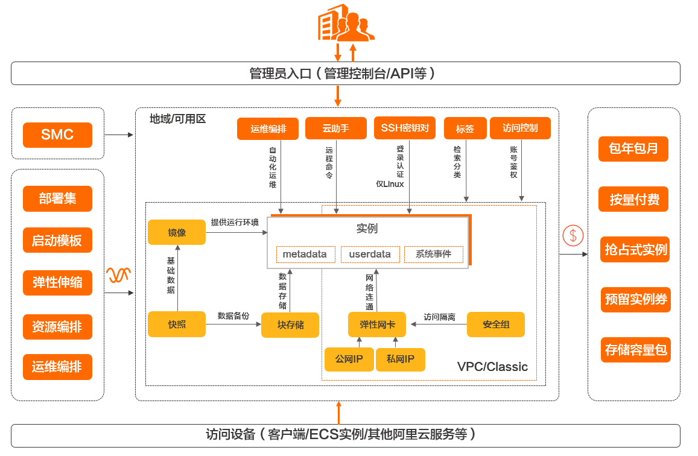

云服务器
什么是云服务器
云服务器(Elastic Compute Service, ECS)是性能卓越、稳定可靠、弹性扩展IaaS（Infrastructure as a Service）级别云计算服务。云服务器免去了采购IT硬件的前期准备，能够便捷、高效地使用服务器，实现计算资源的即开即用和弹性伸缩。
云服务器能够快速构建更稳定、安全的应用，降低开发运维的难度和整体IT成本，更专注于核心业务的创新。
高可用性
安全性
弹性
计算弹性
纵向的弹性。
即单台云服务器ECS的配置变更。普通IDC模式下，很难做到对单台服务器进行变更配置。
横向的弹性。
对于游戏应用或直播平台出现的高峰期，若在普通的IDC模式下，根本无法立即准备资源；而云计算却可以使用弹性的方式度过这样的高峰。当业务高峰消失时，可以将多余的资源释放掉，以减少业务成本。利用横向的扩展和缩减，配合阿里云的弹性伸缩，完全可以做到定时定量的伸缩，或者按照业务的负载进行伸缩。关于横向弹性的具体应用，请参见什么是弹性伸缩。
存储弹性
当数据量增多时，对于普通的IDC方案，您只能不断增加服务器，而这样扩展的服务器数量是有限的。阿里云为您提供海量的存储，您可以按需购买，为存储提供最大保障。关于存储弹性的具体应用，请参见云盘扩容。
网络弹性
阿里云的专有网络VPC的网络配置与普通IDC机房配置可以是完全相同的，并且可以拥有更灵活的拓展性。在阿里云，您可以实现各个可用区（机房）之间的互联互通、安全域隔离以及灵活的网络配置和规划。关于网络弹性的具体应用，请参见专有网络。
与普通IDC对比优势
云服务器ECS与普通IDC的优势对比如下表所示。
| 对比项 | 云服务器ECS | 普通IDC |
|---|---|---|
| 机房部署 | 直流电服务器，绿色机房设计，PUE（Power Usage Effectiveness，电源利用效率）值低 | 传统交流电服务器设计，PUE值高 |
| 骨干机房，出口带宽大，独享带宽 | 机房质量参差不齐，用户选择困难，以共享带宽为主 | |
| BGP（Border Gateway Protocol，边界网关协议）多线机房，全国访问流畅均衡 | 以单线和双线为主 | |
| 操作易用 | 内置主流的操作系统，Windows正版激活 | 需用户自备操作系统，自行安装 |
| 可在线更换操作系统 | 无法在线更换操作系统，需要用户重装 | |
| Web在线管理，简单方便 | 没有在线管理工具，维护困难 | |
| 手机验证密码设置，安全方便 | 重置密码麻烦，且被破解的风险大 | |
| 容灾备份 | 三副本数据设计，单份损坏可在短时间内快速恢复 | 用户自行搭建，使用普通存储设备，价格高昂 |
| 用户自定义快照 | 没有提供快照功能，无法做到自动故障恢复 | |
| 硬件故障事故中可快速自动恢复 | 数据损坏需用户修复 | |
| 安全可靠 | 有效阻止MAC欺骗和ARP攻击 | 很难阻止MAC欺骗和ARP攻击 |
| 有效防护DDoS攻击，可进行流量清洗和黑洞 | 清洗和黑洞设备需要另外购买，价格昂贵 | |
| 端口入侵扫描、挂马扫描、漏洞扫描等附加服务 | 普遍存在漏洞挂马和端口扫描等问题 | |
| 灵活扩展 | 开通云服务器非常灵活，可以在线升级配置 | 服务器交付周期长 |
| 带宽升降自由 | 带宽一次性购买，无法自由升降 | |
| 在线使用负载均衡，轻松扩展应用 | 硬件负载均衡，价格昂贵，设置也非常麻烦 | |
| 节约成本 | 使用成本门槛低 | 使用成本门槛高 |
| 无需一次性大投入 | 一次性投入巨大，闲置浪费严重 | |
| 按需购买，弹性付费，灵活应对业务变化 | 无法按需购买，必须为业务峰值满配 |
为什么要用云服务器
- 无需自建机房，无需采购以及配置硬件设施。
- 分钟级交付，快速部署，缩短应用上线周期。
- 快速接入部署在全球范围内的数据中心和BGP机房。
- 成本透明，按需使用，支持根据业务波动随时扩展和释放资源。
- 提供GPU和FPGA等异构计算服务器、弹性裸金属服务器以及通用的x86架构服务器。
- 支持通过内网访问其他阿里云服务，形成丰富的行业解决方案，降低公网流量成本。
- 提供虚拟防火墙、角色权限控制、内网隔离、防病毒攻击及流量监控等多重安全方案。
- 提供性能监控框架和主动运维体系。
- 提供行业通用标准API，提高易用性和适用性。
怎么使用云服务器
架构
云服务器ECS主要包含以下功能组件：
- 实例：等同于一台虚拟服务器，内含CPU、内存、操作系统、网络配置、磁盘等基础的计算组件。实例的计算性能、内存性能和适用业务场景由实例规格决定，其具体性能指标包括实例vCPU核数、内存大小、网络性能等。
- 镜像：提供实例的操作系统、初始化应用数据及预装的软件。操作系统支持多种Linux发行版和多种Windows Server版本。
- 块存储：块设备类型产品，具备高性能和低时延的特性。提供基于分布式存储架构的云盘以及基于物理机本地存储的本地盘。
- 快照：某一时间点一块云盘的数据状态文件。常用于数据备份、数据恢复和制作自定义镜像等。
- 安全组：由同一地域内具有相同保护需求并相互信任的实例组成，是一种虚拟防火墙，用于设置实例的网络访问控制。
- 网络：
- 专有网络（Virtual Private Cloud）：逻辑上彻底隔离的云上私有网络。可以自行分配私网IP地址范围、配置路由表和网关等。
- 经典网络：所有经典网络类型实例都建立在一个共用的基础网络上。

购买云服务器
如何选择配置
普通的个人小型网站，个人博客等小流量网站
可选择低配置的腾讯云服务器
推荐配置：CPU：1核、内存1G或2G、硬盘40G、带宽：1M或2M
论坛、门户类网站
论坛、门户类网站，用户活跃性与访问量较高，需要有足够的服务器资源空间和带宽，提升访问速度。
推荐配置：CPU：2核、内存：4G、硬盘200-500G、带宽：5-10M
品牌官网类网站
对官网、品牌较为重视的政府、企业等， 需要保证网站浏览更加流利顺畅，提升政府、品牌形象。
推荐配置：CPU：4核、内存：8G、硬盘150G、带宽：5M
视频、购物类网站：视频、购物类网站
包含庞大的数据信息， 需要保证迅速的信息处理能力保证网站的点播、交易正常进行。
推荐配置：CPU：8核、内存：16G、硬盘300G以上、带宽：10M以上
游戏、软件类网站
对开发、测试、环境要求较高的游戏软件类网站，需要较高的资源配置带来更强劲的计算性能，保证业务需求。
推荐配置：CPU：16核、内存：32G、硬盘：500G、带宽：10M以上